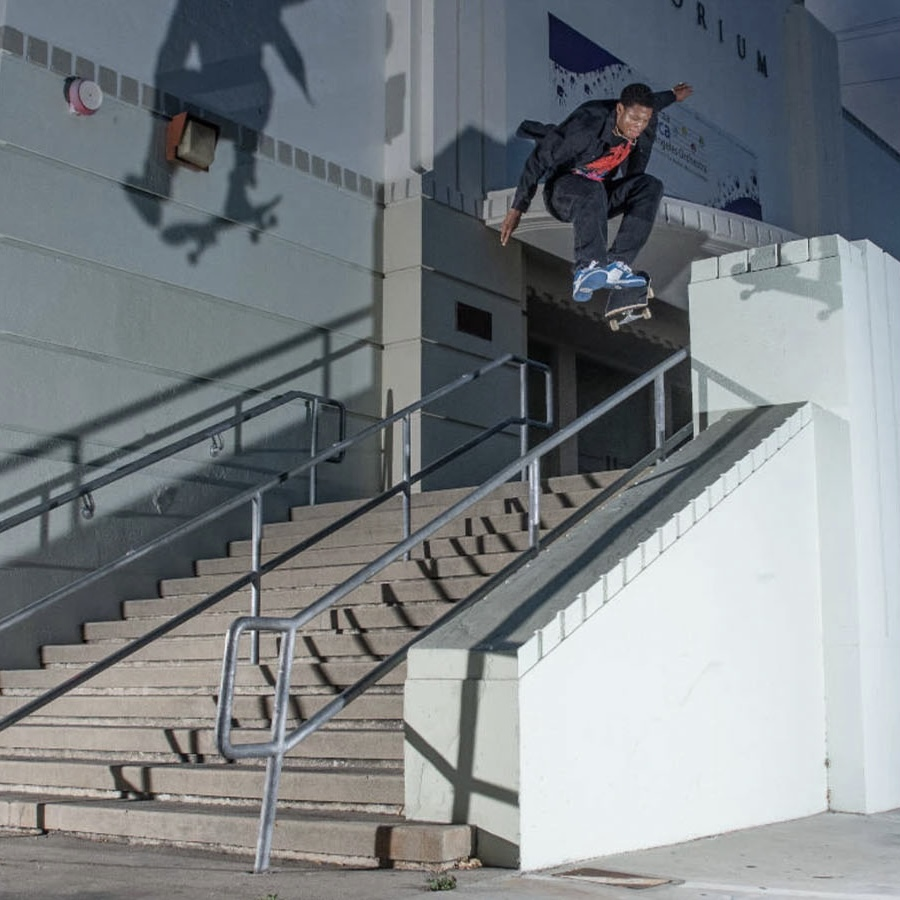
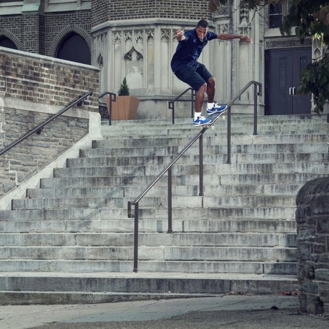
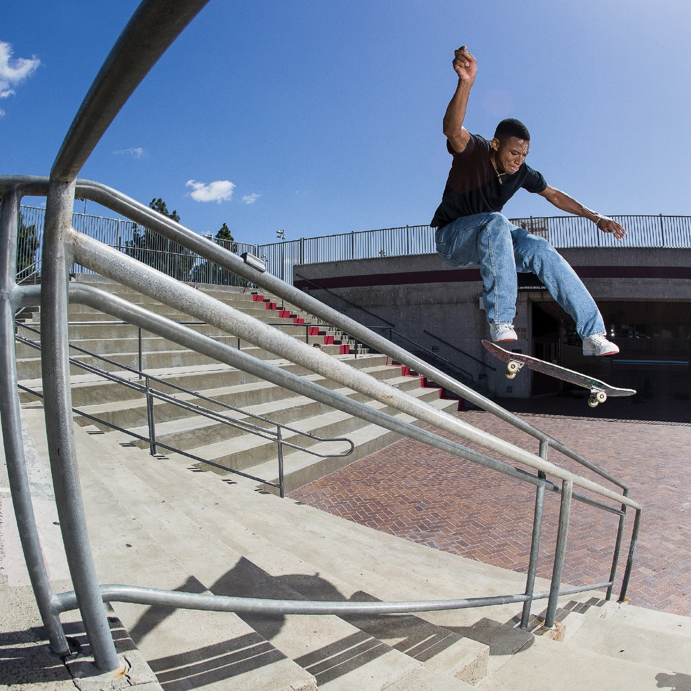
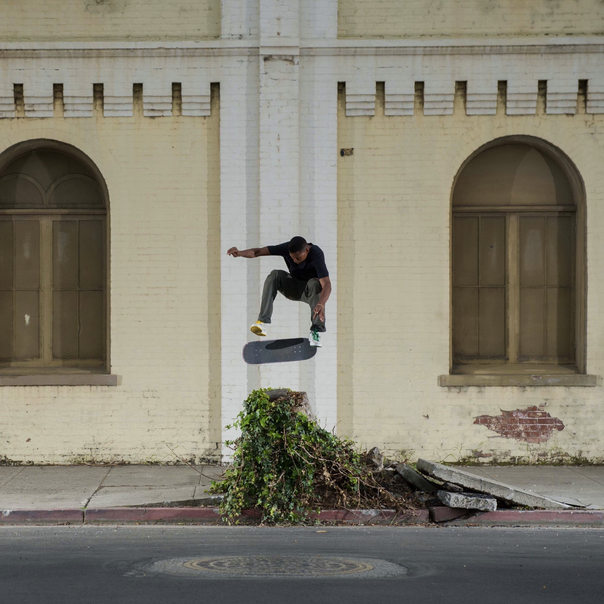

Ishod Wair has often been referred to as the Michael Jordan of street skating. His effortless style matched with his limitless bag of tricks makes him a favorite of everybody in the skate community.
Ishod's first video part of the year came in March for Real Skateboards titled "REAL Presents Ishod". This part is a mind melting ten minutes long. Essentially, he could have broken this up into 3 different video parts throughout the year like most skaters do. One of the best things about this part is you can tell Ishod is just out there having fun.
A few weeks later, Ishod dropped his second part titled "5 Days in the Bay with Ishod". The part was filmed entirely in the Bay Area. A lot of pros would need a year to film what Ishod can knock out in a week.
  